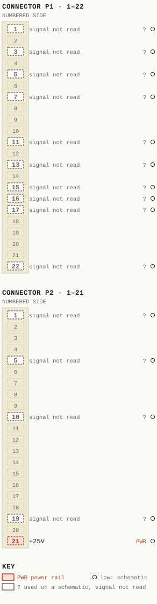
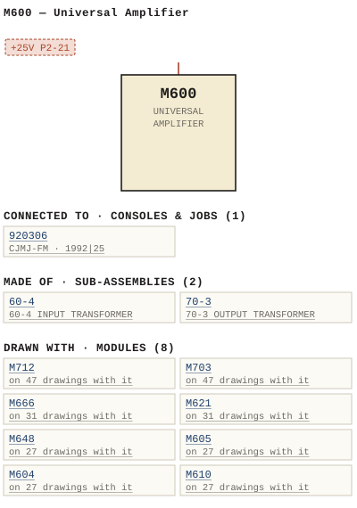

M600 — Universal Amplifier
| Type | module |
| Category | AMPLIFIERS |
| Try it | simulator & front panel · download package (zip) |
| Earliest dated evidence | 1970|3 — title-block date |
| Evidence | "DATE Oct 70" in WBS Photos-1-001/WBSps.ca -2021-3-15-19-3-51 (44).jpg |
| Confidence | high |
| All years found | 1970|3, 1987|20 |
| Used in jobs | 920306 (1992|25) |
| Folder | DOCUMENTS/BROADCAST-SOLUTIONS/MF6---EQUIPMENT-MOUNTING-FRAME |
| Folder | DOCUMENTS/Communication/7000 series - Intercom System |
| Folder | DOCUMENTS/Internal and Eng Notes and drawings/Quotations brochures and misc papers |
Connections
What it is made of and what it is part of.
Pictures
 1975 - M600 - PRICE LIST - PRICE LIST.jpg
1975 - M600 - PRICE LIST - PRICE LIST.jpg

M600.pinout.svg

M600.connections.svg 1970 - 600-02-005 - M600R SYSTEM FOR CDL A V SWITCHER APPLICATION.jpg
1970 - 600-02-005 - M600R SYSTEM FOR CDL A V SWITCHER APPLICATION.jpg 1987 - M600 - P001 - Title Page.jpg
1987 - M600 - P001 - Title Page.jpg 1970 - M600 - 00-02-012 - AUDIO AMPLIFIER TYPICAL SYSTEM WIRING SCHEMATIC.jpg
1970 - M600 - 00-02-012 - AUDIO AMPLIFIER TYPICAL SYSTEM WIRING SCHEMATIC.jpg 1970 - M600 - 122-02-001 - COM GAIN SET (2).jpg
1970 - M600 - 122-02-001 - COM GAIN SET (2).jpg 1970 - M600 - 122-02-001 - COM GAIN SET.jpg
1970 - M600 - 122-02-001 - COM GAIN SET.jpg 1970 - M600 - 122-06-012 - AMPLIFIER ASSEMBLY COMPONENT LAYOUT.jpg
1970 - M600 - 122-06-012 - AMPLIFIER ASSEMBLY COMPONENT LAYOUT.jpg 1970 - M600 - 122-06-012.jpg
1970 - M600 - 122-06-012.jpg 1970 - M600 - 600-02-010 - LOG SENSITIVITY CONTROL.jpg
1970 - M600 - 600-02-010 - LOG SENSITIVITY CONTROL.jpg 1970 - M600 - 600-02-011 - AUDIO AMPLIFIER OUTPUT STRAPPING SCHEMATIC.jpg
1970 - M600 - 600-02-011 - AUDIO AMPLIFIER OUTPUT STRAPPING SCHEMATIC.jpg 1970 - M600 - 600-02-011 - PAO BOARD ASSY.jpg
1970 - M600 - 600-02-011 - PAO BOARD ASSY.jpg 1970 - M600 - 600-02-012 - INSULATED MOUNTING FRAME GROUND BAR AND CHASSIS.jpg
1970 - M600 - 600-02-012 - INSULATED MOUNTING FRAME GROUND BAR AND CHASSIS.jpg 1970 - M600 - 600-04-010 - AUDIO AMPLIFIER PERSPECTIVE LAYOUT.jpg
1970 - M600 - 600-04-010 - AUDIO AMPLIFIER PERSPECTIVE LAYOUT.jpg 1970 - M600 - 600-04-010.jpg
1970 - M600 - 600-04-010.jpg 1970 - M600 - 800-02-010 - AUDIO AMPLIFIER SCHEMATIC.jpg
1970 - M600 - 800-02-010 - AUDIO AMPLIFIER SCHEMATIC.jpg 1970 - M600 - P002.jpg
1970 - M600 - P002.jpg 1970 - M600 - P003 - 1-1.jpg
1970 - M600 - P003 - 1-1.jpg 1970 - M600 - P004 - 2-1.jpg
1970 - M600 - P004 - 2-1.jpg 1970 - M600 - P005 - 3-1.jpg
1970 - M600 - P005 - 3-1.jpg 1970 - M600 - P006 - 3-2.jpg
1970 - M600 - P006 - 3-2.jpg 1970 - M600 - P007 - 4-1.jpg
1970 - M600 - P007 - 4-1.jpg 1970 - M600 - P008 - 5-1.jpg
1970 - M600 - P008 - 5-1.jpg 1970 - M600 - P009 - 6-1.jpg
1970 - M600 - P009 - 6-1.jpg 1970 - M600 - P010 - 7-1.jpg
1970 - M600 - P010 - 7-1.jpg 1970 - M600 - P011 - 8-1.jpg
1970 - M600 - P011 - 8-1.jpg 1970 - M600 - P012 - 9-1.jpg
1970 - M600 - P012 - 9-1.jpg 1970 - M600 - P013 - 9-2.jpg
1970 - M600 - P013 - 9-2.jpg 1970 - M600 - P014 - 9-3.jpg
1970 - M600 - P014 - 9-3.jpg 1970 - M600 - P015 - 10-1.jpg
1970 - M600 - P015 - 10-1.jpg 1970 - M600 - P016 - 10-2.jpg
1970 - M600 - P016 - 10-2.jpg 1970 - M600 - P017 - 11-1.jpg
1970 - M600 - P017 - 11-1.jpg 1970 - M600 - Ward Beck Systems M600 b.jpg
1970 - M600 - Ward Beck Systems M600 b.jpg 1970 - M600 - Ward Beck Systems M600.jpg
1970 - M600 - Ward Beck Systems M600.jpg 1970 - M600 - wbsps - module - m600 - back.jpg
1970 - M600 - wbsps - module - m600 - back.jpg 1970 - M600 - wbsps - module - m600 - back_small.jpg
1970 - M600 - wbsps - module - m600 - back_small.jpg 1970 - M600 - wbsps - module - m600 - front.jpg
1970 - M600 - wbsps - module - m600 - front.jpg 1970 - M600 - wbsps - module - m600 - front_small.jpg
1970 - M600 - wbsps - module - m600 - front_small.jpg 1970 - M600 - wbsps - promo - m600 - 003.jpg
1970 - M600 - wbsps - promo - m600 - 003.jpg 1970 - M600 - wbsps - promo - m600 - 004.jpg
1970 - M600 - wbsps - promo - m600 - 004.jpg 1970 - M600 - wbsps - promo - m600 - back.jpg
1970 - M600 - wbsps - promo - m600 - back.jpg 1970 - M600 - wbsps - promo - m600 - front.jpg
1970 - M600 - wbsps - promo - m600 - front.jpg 1975 - 600-02-001 - AUDIO AMPLIFIER SCHEMATIC - DRN DM - ISS 14.jpg
1975 - 600-02-001 - AUDIO AMPLIFIER SCHEMATIC - DRN DM - ISS 14.jpg 1975 - 600-02-006 - EXTERNAL CONNECTIONS - DRN DM - ISS 1.jpg
1975 - 600-02-006 - EXTERNAL CONNECTIONS - DRN DM - ISS 1.jpg 1987 - 600-02-001 - INPUT CHANNEL SCHEMATIC - DRN JRG - ENG JRG - ISS 1.png
1987 - 600-02-001 - INPUT CHANNEL SCHEMATIC - DRN JRG - ENG JRG - ISS 1.png 1987 - 600-02-002 - STEREO OUTPUT CHANNEL SCHEMATIC - DRN JRG - ENG JRG - ISS 2.png
1987 - 600-02-002 - STEREO OUTPUT CHANNEL SCHEMATIC - DRN JRG - ENG JRG - ISS 2.png 1987 - 600-02-003 - MONO OUTPUT CHANNEL SCHEMATIC - DRN JRG - ENG GEB - ISS 2.png
1987 - 600-02-003 - MONO OUTPUT CHANNEL SCHEMATIC - DRN JRG - ENG GEB - ISS 2.png 1987 - 600-02-004 - MONITOR SCHEMATIC - DRN JRG - ENG JRG - ISS 1.png
1987 - 600-02-004 - MONITOR SCHEMATIC - DRN JRG - ENG JRG - ISS 1.png 1987 - 600-02-005 - LINE SELECTORS SCHEMATIC - DRN JRG - ENG JRG - ISS 1.png
1987 - 600-02-005 - LINE SELECTORS SCHEMATIC - DRN JRG - ENG JRG - ISS 1.png 1987 - 600-02-007 - CUE CHANNEL SCHEMATIC - DRN JRG - ENG GEB - ISS 1.png
1987 - 600-02-007 - CUE CHANNEL SCHEMATIC - DRN JRG - ENG GEB - ISS 1.png 1987 - 600-02-008 - TALKBACK SCHEMATIC - DRN JRG - ENG JRG - ISS 1.png
1987 - 600-02-008 - TALKBACK SCHEMATIC - DRN JRG - ENG JRG - ISS 1.png 1987 - 600-02-009 - POWER SUPPLY WIRING SCHEMATIC - DRN JRG - ENG JRG - ISS 1.png
1987 - 600-02-009 - POWER SUPPLY WIRING SCHEMATIC - DRN JRG - ENG JRG - ISS 1.png 19xx - DOC - Ward Beck Systems MF6.jpg
19xx - DOC - Ward Beck Systems MF6.jpg 19xx - DOC - 7000 series - 001.jpg
19xx - DOC - 7000 series - 001.jpg 19xx - DOC - 7000 series - promo - 002.jpg
19xx - DOC - 7000 series - promo - 002.jpg 19xx - DOC - US Sales Brochure pg 2.jpg
19xx - DOC - US Sales Brochure pg 2.jpg 19xx - DOC - US Sales Brochure pg 7.jpg
19xx - DOC - US Sales Brochure pg 7.jpg 19xx - DOC - US Sales Brochure pg 9.jpg
19xx - DOC - US Sales Brochure pg 9.jpg 19xx - DOC - wbsps - module - mf6 mounting frame - front.jpg
19xx - DOC - wbsps - module - mf6 mounting frame - front.jpg 19xx - DOC - wbsps - promo - mf6 mounting frame - front.jpg
19xx - DOC - wbsps - promo - mf6 mounting frame - front.jpg 19xx - DOC - 7000 series - 001.jpg
19xx - DOC - 7000 series - 001.jpg 19xx - DOC - promo - 7000 series - 002.jpg
19xx - DOC - promo - 7000 series - 002.jpg 19xx - DOC - M600 - 600-02-003 - DOCUMENT.jpg
19xx - DOC - M600 - 600-02-003 - DOCUMENT.jpg 19xx - DOC - M600 - 600-06-001 - DOCUMENT.jpg
19xx - DOC - M600 - 600-06-001 - DOCUMENT.jpg 19xx - 600-02-010 - AUDIO AMPLIFIER SCHEMATIC - ISS 1.jpg
19xx - 600-02-010 - AUDIO AMPLIFIER SCHEMATIC - ISS 1.jpg 19xx - 600-02-011 - AUDIO AMPLIFIER OUTPUT STRAPPING SCHEMATIC - ISS 3.jpg
19xx - 600-02-011 - AUDIO AMPLIFIER OUTPUT STRAPPING SCHEMATIC - ISS 3.jpg 19xx - 600-02-012 - AUDIO AMPLIFIER TYPICAL SYSTEM WIRING SCHEMATIC - ISS 1.jpg
19xx - 600-02-012 - AUDIO AMPLIFIER TYPICAL SYSTEM WIRING SCHEMATIC - ISS 1.jpg 19xx - 600-02-100 - M625B D TEST JIG SCHEMATIC (T625B) - DRN T. RICHARDSON - ENG T. RICHARDSON - ISS 1.png
19xx - 600-02-100 - M625B D TEST JIG SCHEMATIC (T625B) - DRN T. RICHARDSON - ENG T. RICHARDSON - ISS 1.png 19xx - M600 - M600 (2).jpg
19xx - M600 - M600 (2).jpg 19xx - M600 - M600 (3).jpg
19xx - M600 - M600 (3).jpg 19xx - M600 - M600 Audio Amplifier P1 Connector Layout 150 ohm strapping.jpg
19xx - M600 - M600 Audio Amplifier P1 Connector Layout 150 ohm strapping.jpg 19xx - M600 - M600 Audio Amplifier P1 Connector Layout 600 ohm strapping.jpg
19xx - M600 - M600 Audio Amplifier P1 Connector Layout 600 ohm strapping.jpg 19xx - M600 - M600.jpg
19xx - M600 - M600.jpg 448px-Wbsps_-_promo_-_m600_-_back.jpg
448px-Wbsps_-_promo_-_m600_-_back.jpg M600 - P002.jpg
M600 - P002.jpg Ward Beck Systems M600 b.jpg
Ward Beck Systems M600 b.jpg wbsps - promo - m600 - 002.jpg
wbsps - promo - m600 - 002.jpg 1992 - 920306-01-001 - CJMJ-FM RADIO CONSOLE AUDIO FUNCTIONAL - DRN PA - ENG PA - ISS 1.jpg
1992 - 920306-01-001 - CJMJ-FM RADIO CONSOLE AUDIO FUNCTIONAL - DRN PA - ENG PA - ISS 1.jpg 19xx - AD - WBSPS - AD - for the engineer who has everything.jpg
19xx - AD - WBSPS - AD - for the engineer who has everything.jpg 19xx - AD - wbsps - ad - 600 series.jpg
19xx - AD - wbsps - ad - 600 series.jpg 19xx - MF6.jpg
19xx - MF6.jpg 19xx - DOC - Ward Beck Systems MF6 b.jpg
19xx - DOC - Ward Beck Systems MF6 b.jpg 19xx - DOC - US Sales Brochure pg 10.jpg
19xx - DOC - US Sales Brochure pg 10.jpg 19xx - DOC - US Sales Brochure pg 14.jpg
19xx - DOC - US Sales Brochure pg 14.jpg 19xx - DOC - wbsps - ad - 600 series.jpg
19xx - DOC - wbsps - ad - 600 series.jpg 19xx - DOC - WBSPS - AD - for the engineer who has everything.jpg
19xx - DOC - WBSPS - AD - for the engineer who has everything.jpg 19xx - DOC - wbsps - promo - mf6 mounting frame - back.jpg
19xx - DOC - wbsps - promo - mf6 mounting frame - back.jpg wbsps - module - m600 - back.jpg
wbsps - module - m600 - back.jpg 19xx - M497 - DOC - 600-02-001 - INPUT CHANNEL SCHEMA TIC.png
19xx - M497 - DOC - 600-02-001 - INPUT CHANNEL SCHEMA TIC.png 19xx - M497 - DOC - 600-02-002 - OUTPUT CHANNELS ARE WIRED.png
19xx - M497 - DOC - 600-02-002 - OUTPUT CHANNELS ARE WIRED.png 19xx - M497 - DOC - 600-02-003 - WITH JUMPERS BETWEEN PINS AND BETWEEN PINS.png
19xx - M497 - DOC - 600-02-003 - WITH JUMPERS BETWEEN PINS AND BETWEEN PINS.png 19xx - M495 - DOC - 600-02-004 - NOVOV MONITOR CHANNELS ARE WIRED IDENTICALLY EXTERNAL INPUTS.png
19xx - M495 - DOC - 600-02-004 - NOVOV MONITOR CHANNELS ARE WIRED IDENTICALLY EXTERNAL INPUTS.png 19xx - M498 - DOC - 600-02-005 - LINE SELECTORS SCHEMA TIC.png
19xx - M498 - DOC - 600-02-005 - LINE SELECTORS SCHEMA TIC.png 19xx - M453A - DOC - 600-02-007 - CUE CHANNEL SCHEMA TIC.png
19xx - M453A - DOC - 600-02-007 - CUE CHANNEL SCHEMA TIC.png 19xx - M451 - DOC - 600-02-008 - TALKBACK SCHEMATIC.png
19xx - M451 - DOC - 600-02-008 - TALKBACK SCHEMATIC.png 19xx - M625B - DOC - 600-02-009 - POWER SUPPLY WIRING SCHEMA TIC.png
19xx - M625B - DOC - 600-02-009 - POWER SUPPLY WIRING SCHEMA TIC.pngPrice history
| Year | Kind | Price | Listed as | Effective | Source |
|---|---|---|---|---|---|
| 1975|8 | list price | 200.00 USD | Universal Amplifier | May 1975 | source |
| 2005|38 | used market value | 25.00 | M600 Audio Distribution Amplifier | wbsps - website ARCHIVE/WBSPS 2008/ARCHIVE/old website/PriceGuide.htm | |
| 2006|39 | used market value | 25.00 | M600 Audio Distribution Amplifier | wbsps - website ARCHIVE/WBSPS 2008/ARCHIVE/jan 2006 shell/priceguide.htm |
Pinout & connections
Each contact as its own documents name it: 1 named (1 low confidence). An empty slot is a contact no page names. Hover a contact for its source; the table under the drawing lists them.
pinout (SVG) · connections (SVG) · pins (JSON)
Pin evidence — 15 contacts
| Pin | Signal | Kind | Confidence | Read from | Source |
|---|---|---|---|---|---|
| P1-1 | — | used on a schematic, signal not read | low | schematic | 1987 - 600-02-001 - INPUT CHANNEL SCHEMATIC -…, p. 1 “SUMMING Low LEVEL CABLES BUSES DRESS SEPARATELY P1-1,2 PGM 1- PIN 1,A(3) P1-3,4 PGM 1-R ~0 PIN 2,B(C) P1-5,6 PGM 2-L L0 PIN 1,A(3) P1-7.8 P…” |
| P1-3 | — | used on a schematic, signal not read | low | schematic | 1987 - 600-02-001 - INPUT CHANNEL SCHEMATIC -…, p. 1 “SUMMING Low LEVEL CABLES BUSES DRESS SEPARATELY P1-1,2 PGM 1- PIN 1,A(3) P1-3,4 PGM 1-R ~0 PIN 2,B(C) P1-5,6 PGM 2-L L0 PIN 1,A(3) P1-7.8 P…” |
| P1-5 | — | used on a schematic, signal not read | low | schematic | 1987 - 600-02-001 - INPUT CHANNEL SCHEMATIC -…, p. 1 “SUMMING Low LEVEL CABLES BUSES DRESS SEPARATELY P1-1,2 PGM 1- PIN 1,A(3) P1-3,4 PGM 1-R ~0 PIN 2,B(C) P1-5,6 PGM 2-L L0 PIN 1,A(3) P1-7.8 P…” |
| P1-7 | — | used on a schematic, signal not read | low | schematic | 1987 - 600-02-001 - INPUT CHANNEL SCHEMATIC -…, p. 1 “SUMMING Low LEVEL CABLES BUSES DRESS SEPARATELY P1-1,2 PGM 1- PIN 1,A(3) P1-3,4 PGM 1-R ~0 PIN 2,B(C) P1-5,6 PGM 2-L L0 PIN 1,A(3) P1-7.8 P…” |
| P1-11 | — | used on a schematic, signal not read | low | schematic | 1987 - 600-02-001 - INPUT CHANNEL SCHEMATIC -…, p. 1 “SUMMING Low LEVEL CABLES BUSES DRESS SEPARATELY P1-1,2 PGM 1- PIN 1,A(3) P1-3,4 PGM 1-R ~0 PIN 2,B(C) P1-5,6 PGM 2-L L0 PIN 1,A(3) P1-7.8 P…” |
| P1-13 | — | used on a schematic, signal not read | low | schematic | 1987 - 600-02-001 - INPUT CHANNEL SCHEMATIC -…, p. 1 “P1-13,14” |
| P1-15 | — | used on a schematic, signal not read | low | schematic | 1987 - 600-02-001 - INPUT CHANNEL SCHEMATIC -…, p. 1 “P1-15,16” |
| P1-16 | — | used on a schematic, signal not read | low | schematic | 1987 - 600-02-009 - POWER SUPPLY WIRING SCHEM…, p. 1 “P1-16 P1-15” |
| P1-17 | — | used on a schematic, signal not read | low | schematic | 1987 - 600-02-001 - INPUT CHANNEL SCHEMATIC -…, p. 1 “P1-17,18” |
| P1-22 | — | used on a schematic, signal not read | low | schematic | 1987 - 600-02-001 - INPUT CHANNEL SCHEMATIC -…, p. 1 “P1-22” |
| P2-1 | — | used on a schematic, signal not read | low | schematic | 19xx - 600-02-100 - M625B D TEST JIG SCHEMATI…, p. 1 “P2-1” |
| P2-5 | — | used on a schematic, signal not read | low | schematic | 1987 - 600-02-009 - POWER SUPPLY WIRING SCHEM…, p. 1 “P2-5,6” |
| P2-10 | — | used on a schematic, signal not read | low | schematic | 1987 - 600-02-001 - INPUT CHANNEL SCHEMATIC -…, p. 1 “P2-10” |
| P2-19 | — | used on a schematic, signal not read | low | schematic | 1987 - 600-02-001 - INPUT CHANNEL SCHEMATIC -…, p. 1 “25v P2-19&w #16 AWG” |
| P2-21 | +25V | power rail | low | schematic | 1987 - 600-02-001 - INPUT CHANNEL SCHEMATIC -…, p. 1 “POWER BUSES CTL COM P2-228Z PINS 9-10 #16 AWG BR +25V P2-21&Y PINS 1-2 #16 AWG RD t- 25V COM P2-20kX PINS 3-4 #16 AWG BK” |
Dates found in the documents


Physical manual inventory
| Item | Location | Status | Scanned |
|---|---|---|---|
| M600 - Audio Amplifer | DUPLICATE | Recently scanned and stiched by WB | |
| M600 - Audio Amplifer | DUPLICATE | SCANNED BUT NEEDS STICHING | |
| M600 - Audio Amplifer | PDF - Already scanned |
Documents (2)
| Year | File | |
|---|---|---|
| 1970|3 | 1970 - M600 - Audio Amplifer (2).pdf | note |
| 1970|3 | 1970 - M600 - Audio Amplifer.pdf | note |
Photos & scans (123)


Sub-assemblies & parts used (2)
| Item | What | Family | Year | How we know |
|---|---|---|---|---|
| 60-4 | 60-4 INPUT TRANSFORMER | Input transformers (60-n) | 1967|0 | drawing filed with it |
| 70-3 | 70-3 OUTPUT TRANSFORMER | Output transformers (70-n) | 1967|0 | named in its manual |
Parts list — board M600 (2 parts)
From 1970 - M600 - P013 - 9-2.jpg, page 1 (scanned); also in timelines/data/bom.csv.
| Ref | Part | Value | Manufacturer | Mfr part no. |
|---|---|---|---|---|
| R16 | soT | |||
| R26 | Sot |
Consoles & jobs it is connected to (1)
Their own drawings name this module.
| Job | Year | Drawing | Page |
|---|---|---|---|
| 920306 | 1992|25 | 1992 - 920306-01-001 - CJMJ-FM RADIO CONSOLE AUDIO FUNCTIONAL - DRN PA - ENG PA - ISS 1.jpg | 1 |
Named in other drawings & documents (42)


From the manuals
Each manual split into its sections. Text that is the same in many Ward-Beck manuals (warranty, address, standard notes) is kept once on the Boilerplate page and linked.
General description (11)
Description — 314 words · 19xx - M600 - DOC - US Sales Brochure pg 2.jpg, page 1
The M621 20 watt audio power amplifier is an ac operated, plug-in module designed for professional applications in the broadcast, motion picture and sound recording industries: The unit represents the continuing development ad expansion of the well proven WBS 600 series of 3-1/2 inch modular components and offers a wider scope of selection for monitor amplifiers from this design category.
The circuit utilizes differential operational amplifiers to produce a ultra-reliable transformerless design capable of developing a minimum of 20 watts rms to drive a 8 ohm loudspeaker directly. Other load impedances (4, 16 ohms, etc ) may be accommodated with appro- priate power output interpolation. A unique protection circuit incorporated within the M621 activates instantaneously during adverse amplifier load conditions or at a pre- determined power output level.
The amplifier does not sustain damage even when deliberately shorted at full power output. A combination of conditional frame strapping ad a variable front panel level control permits the M621 t0 operate over an input signal range of ~20dBm to 18dBm: The M621 presents a permanent 20k ohm impedance at the input ad is capable of operating from a balanced or unbalanced source.
The unit exhibits exceedingly uniform frequency response with low noise ad distortion over the frequency range 30Hz to Z0kHZ An internal muting relay is included to provide amplifier cut-off when a external (closure to ground) command is initiated via muting logic control circuitry, etc. The modest size of 5.1W x 3.4H x 13.70 inches allows three M621 monitor amplifiers to be accommodated in one standard rack mount- ing (19W x 3.5H) MF6 equipment frame: FEATURES 2Ow rms direct output into 8 ohms Compact design mounts in standard WBS 3-1/2 inch MF6 rack frame.
Self contained power supply Integral muting relay Operational amplifier transformerless 1C design with unique short-circuit protection 20k bridging input balanced /unbalanced Active elements contained on plug-in subsidiary PC card 22488
- source: 19xx - M600 - DOC - US Sales Brochure pg 2.jpg, p. 1
Description — 273 words · 19xx - M600 - DOC - 7000 series - promo - 002.jpg, page 1
THE WARD-BECK SYSTEMS 7000 Series solid-state Intercom Systems are designed to provide inter- communication between production and technical staff within a broadcast or production complex: Modular construction enhances the flexibility of the available configurations. 1 ) M7012 ~ 12 input, 12 output configuration with to 144 crosspoints (expansion capability to 12 x 16 with 1 to 192 crosspoints) . Requires 8 rack units of space.
2) M7024 24 input, 24 output configuration with to 576 crosspoints. Requires 14 rack units of space. Various capacity systems are conveniently assembled by re-arranging the modular components. The 7000 series Intercom Systems comprise centrally located amplifier and switching equipment which is remotely controlled from passive control stations situated in the appropriate personnel areas: The concept features entirely balanced circuitry for improved crosstalk and minimum transient and RF degradation: The system utilizes latest state-of-the-art operational amplifier techniques with solid-state balanced crosspoints and integrated circuit amplifier designs: Optimum efficiency in packaging is achieved by use of one MF7 frame type which accommodates the basic amplifier and crosspoint modules.
12 M703 inputloutput amplifier modules or 24 M712 cross- point modules may be accommodated in the 5-1/4 in. high (3 rack units) , standard 19 in. rack mounting MF7 equipment frame. The sophistication of the system may be expanded as required through the use of WBS 600 series power amplifiers and distribution amplifiers for higher listening levels and multiple output distribution: The inherent flexibility of the 7000 series system permits convenient integration of the facility with any existing system: In addition, the basic modules will accommodate dynamic or carbon micro- phone inputs from various sources or any make of camera equipment
- source: 19xx - M600 - DOC - 7000 series - promo - 002.jpg, p. 1
Description — 284 words · 19xx - M600 - DOC - US Sales Brochure pg 7.jpg, page 1
The M666 100 watt audio power amplifier is a ac operated, plug-in module designed for professional applications in the broadcast, motion picture ad sound recording industries: The unit represents the continuing development and expansion of the well proven WBS 600 series of modular components and offers a wider scope of selection for monitor amplifiers from this design category. The circuit utilizes differential operational amplifiers to produce a ultra- reliable transformerless design capable of developing a minimum of 100 watts rms to drive a 8 ohm loudspeaker directly.
Other load impedances (4, 16 ohms, etc:) may be accommodated with appropriate power output inter- polation. A unique protection circuit incorporated within the M666 activates instantan- eously during adverse ampli ifier load conditions or at predetermined power output level: The amplifier does not sustain damage even when deliberately shorted at full power output A combination of conditional frame strapping and variable front panel level control permits the M666 to operate over an input signal range of OdBm to +20dBm: The M666 presents a permanent 10k ohm impedance at the input and is capa- ble of operating from balanced or unbalanced source.
The unit exhibits ex- ceedingly uniform frequency response with low noise and distortion over the frequency range 20 Hz to 20kHz: The modest size of 8.5Wx SHx13.7D inches allows two M666 monitor amplifiers to be accommodated in one standard rack mounting (19W x 5.25H) MF6A equipment frame FEATURES: 10Ow rms direct output into 8 ohms Compact design mounts in standard WBS 5% inch MFGA rack frame.
Self contained power supply Operational amplifier transformer- less IC design with unique short- circuit protection 10k bridging input balanced/ unbalanced Active elements contained on plug in subsidiary PC card 24#
- source: 19xx - M600 - DOC - US Sales Brochure pg 7.jpg, p. 1
- also in: 19xx - M600 - DOC - promo - 7000 series - 002.jpg, p. 1 · 19xx - M600 - DOC - wbsps - promo - mf6 mounting frame - front.jpg, p. 1 · 19xx - M600 - DOC - Ward Beck Systems MF6.jpg, p. 1 · 19xx - M600 - DOC - US Sales Brochure pg 9.jpg, p. 1 · 1970 - M600 - wbsps - promo - m600 - front.jpg, p. 1 · 1970 - M600 - Ward Beck Systems M600.jpg, p. 1 · 19xx - M600 - DOC - wbsps - module - mf6 mounting frame - front.jpg, p. 1 · 1970 - M600 - P006 - 3-2.jpg, p. 1
Specifications (9)
Technical Data — 220 words · 1970 - M600 - wbsps - promo - m600 - back.jpg, page 1
GAIN 50 7OdB Transducer FREQUENCY RESPONSE 1 0.25dB from 2OHz to 20kHz (greater than -3dB at 35kHz) EQUIVALENT INPUT NOISE ~1 26dBm (1OHz to 1OOkHz bandwidth) _128dBm (1OHz to 20kHz bandwidth) TOTAL HARMONIC DISTORTION Less than 0.25% from 3OHz to 20kHz , Less than 0.5% from 20Hz to 20kHz (Measured at + 3OdBm output level) SOURCE IMPEDANCE 150/600 ohms balanced or unbalanced INPUT IMPEDANCE Greater than X 10 source impedance INPUT LEVEL 6OdBm nominal, ~2OdBm maximum LOAD IMPEDANCE 150/600 ohms balanced or unbalanced OUTPUT IMPEDANCE Less than /5 load impedance OUTPUT LEVEL 3OdBm (1 watt) maximum PHASING The low terminal number of the input pair and the low terminal number of the output pair are in phase POWER REQUIREMENTS 48 volts dc, reg.
from M648 or equiv. 1OOmA at watt output level AMBIENT TEMPERATURE 0" to 60'c DIMENSIONS 1.7W 3.4H x 13.7D inches WEIGHT 4 Ibs net ACCESSORIES: MF6 600 Series Mounting Frame. 19W x 3.5H 14.5D (less rear cable tray and cover)_ Standard EIA rack mounting: Accommodates ten M6OO modules or any combination of single, double or quadruple units not exceeding ten single width modules MFR6 600 Series Frame Receptacle.
One required per M6OO. WARD-BECK sysTeMs LTD_ WARD-BECK SYSTEMS INC. 841 Progress Ave,Scarborough, Ont. M1H 2x4 290 Larkin St;, Buffalo, New York 14210 Telephone: (416) 438-655O Telex: 06-23469 WBS
- source: 1970 - M600 - wbsps - promo - m600 - back.jpg, p. 1
Technical Data — 221 words · 19xx - M600 - M600.jpg, page 1
GAIN 50 7OdB Transducer FREQUENCY RESPONSE + 0.25dB from 2OHz to 20kHz (greater than -3dB at 35kHz) EQUIVALENT INPUT NOISE -126dBm (1OHz to 1OOkHz bandwidth) _128dBm (1OHz to 20kHz bandwidth) TOTAL HARMONIC DISTORTION Less than 0.25% from 3OHz to 2OkHz, Less than 0.5% from 2OHz to 20kHz (Measured at + 3OdBm output level) SOURCE IMPEDANCE 150/600 ohms balanced or unbalanced INPUT IMPEDANCE Greater than X 10 source impedance INPUT LEVEL ~6OdBm nominal, ~2OdBm maximum LOAD IMPEDANCE 150/600 ohms balanced or unbalanced OUTPUT IMPEDANCE Less than 1/5 load impedance OUTPUT LEVEL 30dBm (1 watt) maximum PHASING The low terminal number of the input pair ad the low terminal number of the output pair are in phase POWER REQUIREMENTS 48 volts dc, reg.
from M648 or equiv. 1OOmA at 1 watt output level AMBIENT TEMPERATURE 0? to 608c DIMENSIONS 1.WW x 3.4H x 13.7D inches WEIGHT 4 Ibs net ACCESSORIES: MF6 600 Series Mounting Frame. 19W x 3.5H 14.5D (less rear cable tray ad cover) . Standard EIA rack mounting: Accommodates ten M6OO modules or ay combination of single, double or quadruple units not exceeding ten single width modules.
MFR6 600 Series Frame Receptacle. One required per M6OO. WARD-BECK SYSTEMS LTD; WARD-BECK SYSTEMS INC. 841 Frogress Ave_Scarboragh, Ont_ MH 2x4 290 Larkin Sc, Buffalo; New Yok 14210 Telephone: (416) 438-6550 Telex: 06-23469 WBS
- source: 19xx - M600 - M600.jpg, p. 1
Technical Data — 220 words · 1970 - M600 - Ward Beck Systems M600 b.jpg, page 1
GAIN 50 7OdB Transducer FREQUENCY RESPONSE 1 0.25dB from 2OHz to 2OkHz (greater than -3dB at 35kHz) EQUIVALENT INPUT NOISE 126dBm (1OHz to 1OOkHz bandwidth) _128dBm (1OHz to 20kHz bandwidth) TOTAL HARMONIC DISTORTION Less than 0.25% from 3OHz to 20kHz , Less than 0.5% from 20Hz to 20kHz (Measured at + 30dBm output level) SOURCE IMPEDANCE 150/600 ohms balanced or unbalanced INPUT IMPEDANCE Greater than X 10 source impedance INPUT LEVEL 6OdBm nominal, ~2OdBm maximum LOAD IMPEDANCE 150/600 ohms balanced or unbalanced OUTPUT IMPEDANCE Less than 1/5 load impedance OUTPUT LEVEL 3OdBm (1 watt) maximum PHASING The low terminal number of the input pair and the low terminal number of the output pair are in phase POWER REQUIREMENTS 48 volts dc, reg: from M648 or equiv.
1OOmA at watt output level AMBIENT TEMPERATURE 0" to 60%c DIMENSIONS 1.7W x 3.4H x 13.70 inches WEIGHT 4 Ibs net ACCESSORIES: MF6 600 Series Mounting Frame. 19W x 3.5H x 14.50 (less rear cable tray and cover) _ Standard EIA rack mounting: Accommodates ten M6OO modules or ay combination of single, double or quadruple units not exceeding ten single width modules MFR6 600 Series Frame Receptacle.
One required per M6OO. WARD-BECK SYSTEMS LTD; WARD-BECK SYSTEMS INC 841 Progress Ave.Scarborough,Ont M1H2x4 290 Larkin St" Buffalo; New York 14210 Telephone: (416) 438-6550 Telex: 06-23469 WBS
- source: 1970 - M600 - Ward Beck Systems M600 b.jpg, p. 1
- also in: 19xx - M600 - M600 (3).jpg, p. 1 · 19xx - M600 - M600 (2).jpg, p. 1 · Ward Beck Systems M600 b.jpg, p. 1 · 1970 - M600 - wbsps - module - m600 - back.jpg, p. 1 · wbsps - promo - m600 - 002.jpg, p. 1 · 1970 - M600 - P003 - 1-1.jpg, p. 1
Installation (2)
Installation — 298 words · 1970 - M600 - P007 - 4-1.jpg, page 1
M6uo AUDI0 AMPL IFIER The M6oo plugs directly into the MF6 mounting fraitie which may bc installed standard inch equipment rack with the hardware supplied with the rack . The MF6 furnished with full guide compliment order accept maximum ten M6oo amplifiers any combination single multiple width modules not exceeding single width modu the mounting frame has been procured with less receptac es, these must be installed the appropriate module positions Where vertical rack space permits and the ultimate noise and crosstalk demanded, recommiended allocate only modules the same type each individua MF6 rack frame Alternately power supply required power [wo single module M6oo amplificrs_ the power supply shoul be installed the right the framie (normal practice iewed from rack front and the amplifiers installed the extreme left .
When mixing amplifer types one frame exercise extreine care seperate cables and adherc proper grounding conventions For optimum results, use insulated, shielded twisted pairs for both input and output wiring Cables operating with Ievel differences exceeding 25 dB should be laced separately and dressed apart fromn cach other and Irom power wiring- Jumiper terminal (chassis ground) all amplifiers common frame together and connect #18 AWG wire frorn each frame amplifiers the systern ground bus _ Makc separate connection from terminal comimon each amplificr the sysler ground bus This wiii prevent current coupling, noise and crosstalk_ Jumper terminal (+V) all amplifiers on and connect #18 AWG wire froi each frame volt power supply terminal coitnon frame together amplifiers thc +48 Individual systems require ground techniques peculiar each system Preferably the one point" ground Sys CM shou be employed eliminate ground loops AII input shielding should he connected individually terminal (input ground) only the input shield ground internally connected he point lowest potential and carried through via terminal the system ground
- source: 1970 - M600 - P007 - 4-1.jpg, p. 1
Connections — 36 words · 1970 - M600 - P010 - 7-1.jpg, page 1
SOURCE MPEDANCE : JUMPER CONNECT: and 16 150 ohms 15 600 ohms and Input Shield Gnd LOAD IMPEDANCE JUMPER CONNECT: 150 ohms and 600 ohms 12 and Gain Strap 10 and +4BV DC GND 7 _
- source: 1970 - M600 - P010 - 7-1.jpg, p. 1
Maintenance & alignment (1)
Maintenance — 297 words · 1970 - M600 - P008 - 5-1.jpg, page 1
M6oo AUDIO AMPLIFIER The M6oo designed for dependab Te, troublc-free serv ice; however as with all high quality electronic equipment regular schedule inspection should be established Any accumulation dust should be periodically removed with soft brush and vacuuin hose The active circuitry may be removed for inspection by unp lugging the 5A122 circuit board Do not insert remove the component board with the unit energized_ fault suspected_ mea suring the dc voltage present the transistor ectrodes may assist determine the cause When compar ing the mncasurements listed the voltage chart consideration should be given the fact that, for direct coupled sections, fault one circuit may cause abnorma condi tions other circuit areas within the same section.
necessary interchange component determine the cause fault, first remiove the solder from the printed circuit foi l fillets associated with thc suspected defective component To do this, use Tight soldering iron watts) combination with an inexpensive vacuum action type hand deso dering tool_ Place the sole dering iron and the desol dering tool thc solder connection be deso dered When the solder mne thoroughly press the plunger release trigger Apply the dering iron on the connect- ion until the vacuum stroke has been completed any the lead connections stick the printed rcuit board free thcm with scribe similar sharply pointed instrument Carefully remove the cornponent which, proven be satisfactory _ mnay be used again for other applications To instal the new componen [ shape the Iea ds the correct spacing.
Insert the part and fold the eads under the printed circuit board firmly hold the component Clip off the excess wire leaving about 1/6 inch Solder the ncw eads using resin core solder and clean the board with inert fluid such as perch- lorethelyne Thc location components shown drawing 1122-06 001
- source: 1970 - M600 - P008 - 5-1.jpg, p. 1
Parts list (text) (1)
Parts List — 79 words · 1970 - M600 - P013 - 9-2.jpg, page 1
MGoo AUDIO AMPLIFIER PART DESCRIPT ION MFG MFG PART NUMBER Transistor National MM3007 MM5007 MM3007 MM5007 01 012 Resistor 1/4w 5% OOK 20K 4K3 8K2 Philips R2 R3 R4 RS R6 R3 RIO Sk 150 2K 47K OK RII R12 R13 R14 R1S 4K7 5K1 10K 1OK 1K8 R16 R17 R1B R19 R2O soT 6k2 39K 15k 2K7 R21 R22 R23 R24 R25 220 330K 10OK 100k 5K6 R26 R27 R28 R29 R3O Sot 8K2 270 6k8 4K?
9-2
- source: 1970 - M600 - P013 - 9-2.jpg, p. 1
Drawings (48)
Each scan with its trace laid over it: the slider runs from the scan to the vector drawing. Click one to see it large and save it as SVG, DXF, KiCad, PDF or PowerPoint.
Audio Amplifier Typical System Wiring Schematicviewer
Com Gain Setviewer
Com Gain Setviewer
Log Sensitivity Controlviewer
Audio Amplifier Output Strapping Schematicviewer
Pao Board Assyviewer
Insulated Mounting Frame Ground Bar And Chassisviewer
Audio Amplifier Schematicviewer
M600R SYSTEM / FOR CDL A/V SWITCHER APPLICATIONviewer
M600 / AUDIO AMPLIFIER SCHEMATICviewer
M600 / EXTERNAL CONNECTIONSviewer
INPUT CHANNEL / SCHEMATICviewer
STEREO OUTPUT CHANNEL / SCHEMATICviewer
MONO OUTPUT CHANNEL / SCHEMATICviewer
MONITOR / SCHEMATICviewer
LINE SELECTORS / SCHEMATICviewer
CUE CHANNEL / SCHEMATICviewer
TALKBACK / SCHEMATICviewer
POWER SUPPLY WIRING / SCHEMATICviewer
Input Channel Schema Ticviewer
Output Channels Are Wiredviewer
19xx - M600 - DOC - M600 - 600-02-003 - DOCUMENTviewer
With Jumpers Between Pins And Between Pinsviewer
Novov Monitor Channels Are Wired Identically External Inputsviewer
Line Selectors Schema Ticviewer
Cue Channel Schema Ticviewer
Talkback Schematicviewer
Power Supply Wiring Schema Ticviewer
AUDIO AMPLIFIER / SCHEMATICviewer
AUDIO AMPLIFIER / OUTPUT STRAPPING SCHEMATICviewer
AUDIO AMPLIFIER / TYPICAL SYSTEM WIRING SCHEMATICviewer
M625B/D TEST JIG / SCHEMATIC (T625B)viewer
Amplifier Assembly Component Layoutviewer
1970 - M600 - 122-06-012viewer
19xx - M600 - DOC - M600 - 600-06-001 - DOCUMENTviewer
Audio Amplifier Perspective Layoutviewer
1970 - M600 - 600-04-010viewer
60-4 / INPUT TRANSFORMERviewer
M600viewer
M600viewer
M600 Audio Amplifier P1 Connector Layout 150 ohm strappingviewer
M600 Audio Amplifier P1 Connector Layout 600 ohm strappingviewer
M600viewer
Read from the drawing title blocks.
| Drawing | Title | Date | Drawn by | Checked by | Iss. | Source |
|---|---|---|---|---|---|---|
| 60-4 | 60-4 / INPUT TRANSFORMER | 1967|0 | file | |||
| D 600-02-005 | M600R SYSTEM / FOR CDL A/V SWITCHER APPLICATION | 1970|3 | file | |||
| B 600-02-001 | M600 / AUDIO AMPLIFIER SCHEMATIC | 1975|8 | DM | RM | 14 | file |
| B 600-02-006 | M600 / EXTERNAL CONNECTIONS | 1975|8 | DM | 1 | file | |
| B 600-02-001 | INPUT CHANNEL / SCHEMATIC | 1987|20 | JRG | 1 | file | |
| B 600-02-002 | STEREO OUTPUT CHANNEL / SCHEMATIC | 1987|20 | JRG | 2 | file | |
| B 600-02-003 | MONO OUTPUT CHANNEL / SCHEMATIC | 1987|20 | JRG | 2 | file | |
| B 600-02-004 | MONITOR / SCHEMATIC | 1987|20 | JRG | 1 | file | |
| B 600-02-005 | LINE SELECTORS / SCHEMATIC | 1987|20 | JRG | 1 | file | |
| B 600-02-007 | CUE CHANNEL / SCHEMATIC | 1987|20 | JRG | 1 | file | |
| B 600-02-008 | TALKBACK / SCHEMATIC | 1987|20 | JRG | 1 | file | |
| B 600-02-009 | POWER SUPPLY WIRING / SCHEMATIC | 1987|20 | JRG | 1 | file | |
| — | M600 Audio Amplifier P1 Connector Layout 150 ohm strapping | file | ||||
| — | M600 Audio Amplifier P1 Connector Layout 600 ohm strapping | file | ||||
| — | file | |||||
| — | file | |||||
| — | M600 | file | ||||
| — | M600 | file | ||||
| — | file | |||||
| — | file | |||||
| — | M600 | file | ||||
| — | file | |||||
| 00-02-012 | Audio Amplifier Typical System Wiring Schematic | 1 | file | |||
| 122-02-001 | Com Gain Set | 6 | file | |||
| 122-02-001 | Com Gain Set | 6 | file | |||
| 122-06-012 | Amplifier Assembly Component Layout | 11 | file | |||
| 122-06-012 | file | |||||
| 600-02-001 | Input Channel Schema Tic | JRG | I | file | ||
| 600-02-002 | Output Channels Are Wired | JRG | file | |||
| 600-02-003 | file | |||||
| 600-02-003 | With Jumpers Between Pins And Between Pins | JRG | B | file | ||
| 600-02-004 | Novov Monitor Channels Are Wired Identically External Inputs | JRG | B | file | ||
| 600-02-005 | Line Selectors Schema Tic | JRG | B | file | ||
| 600-02-007 | Cue Channel Schema Tic | JRG | B | file | ||
| 600-02-008 | Talkback Schematic | JRG | B | file | ||
| 600-02-009 | Power Supply Wiring Schema Tic | JRG | 1 | file | ||
| 600-02-010 | Log Sensitivity Control | file | ||||
| 600-02-011 | Audio Amplifier Output Strapping Schematic | file | ||||
| 600-02-011 | Pao Board Assy | file | ||||
| 600-02-012 | Insulated Mounting Frame Ground Bar And Chassis | file | ||||
| 600-04-010 | Audio Amplifier Perspective Layout | 1 | file | |||
| 600-04-010 | file | |||||
| 600-06-001 | file | |||||
| 800-02-010 | Audio Amplifier Schematic | 1 | file | |||
| B 600-02-010 | AUDIO AMPLIFIER / SCHEMATIC | 1 | file | |||
| B 600-02-011 | AUDIO AMPLIFIER / OUTPUT STRAPPING SCHEMATIC | 3 | file | |||
| B 600-02-012 | AUDIO AMPLIFIER / TYPICAL SYSTEM WIRING SCHEMATIC | 1 | file | |||
| B 600-02-100 | M625B/D TEST JIG / SCHEMATIC (T625B) | T RICHARDSON | 1 | file |